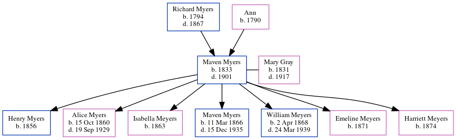

William Myers 1834 -
[ Home ] | [ Calendar ] | [ Surnames Index ] | [ Errors ] | [ Family History ]The child of Richard Myers and Ann, William Myers was born in North Shields, Tyne and Wear, England in 18341 and baptised in Tynemouth, Tyne and Wear, England on 26 May 1835. Like his father, he was a coal miner. On 30 Mar 1851, he was living at Victoria Inn, South Shields, Tyne and Wear, England1.
Parents
- Richard was born in 1794
- Ann was born in 1790
Citations
- 1851 England, Wales & Scotland Census - Findmypast (was age 17 and the son of the head of the household)
Media
Northumberland and Durham Baptisms - GBPRS/B/303493467/1
Durham Bishop's Transcripts Baptisms - DURHAM/BT/BAP/0681719
England Births & Baptisms 1538-1975 - R_866325107
Family Tree
Map
Generated by ged2site. Last updated on Jul 3, 2024
Known Issues
Can't find relationship with the home person